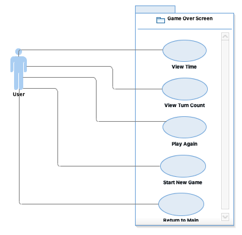

This should contain most use case diagrams as well as the most of the text description of your use cases.
Most use cases should be identified and 60% of use case descriptions should be completed
A user that wants to create a new profile will be able to do so through the Login system by choosing the "Create a New Profile" option. Upon choosing this option the user will be prompted to create a new username and password. Once a username and password is created it will be saved to a persistant storage system.
A user that has previously created a profile and login to their profile through the Login system by choosing the "Login to Existing Profile" option. Upon choosing this option the user will be prompted via the authenticaion subsystem to enter their username and password. The authenticaion subsystem will check the user's credentials. If the authenticaion is a successful, the user will be brought to the Main Menu. If the authentication fails, the user will be notified and will need to re-enter their username and password.
A user can choose to play as a guest. Upon choosing this option the system will notify the user that their progress and high scores will not be saved. The user will be be brought to the Main Menu.

Upon logging in, the user will be given five different options to choose from.
1. The first option is to play a new game. After selecting this, the Game Setup screen (reference the Game Setup Use Case) will be opened.
2. A second option is to load a previously played and saved game. If the user chooses to load a preexisting game file, the File Chooser subsystem will prompt the user to choose a file from their local file system. If the user cancels the File Chooser subsystem, the user will be taken back to the main menu. If the user chooses a file that not in an acceptable save format, the user will be asked to choose another file. If the user chooses a file that is in an acceptable format, the File Chooser subsystem will then load the previously played game.
3. A third option is to check high-scores. This will result in a pop-up window appearing on the screen displaying various statistics regarding previously played games. If the user is logged in as a player, the high-scores will only be from their previously played games. If no previous scores exist, then the high-scores list will be empty. If the user is logged in as a guest, then fictional stats will be provided.
4. A fourth option is to access game settings. These are various settings that alter features that aren’t critical to gameplay. These may include background display themes, music, or sound effects.
5. The fifth option is to logout. This option simply takes the user back to the initial Login screen (reference the Login Use Case).

A user that has chosen to start a New Game from the Main Menu or from the Win Game Menu will be prompted to set up their game options. A user can choose the difficulty of their New Game which will determine the number of squares the chosen image will be split. Upon choosing a difficulty, a user will be able to choose an image from a pre-defined set or upload their own image. If the user chooses a pre-defined image they will be brought to the Game Screen. If the user chooses to upload an image the File Chooser subsystem will prompt the user to choose a file from their local file system. If the user cancels the File Chooser subsystem, the user will once again be prompted to choose an image from a pre-defined set or upload their own image. If the user chooses a file that not in an acceptable image format, the user will be asked to choose another file. If the user chooses a file that is in an acceptable image format, the File Chooser subsystem will then upload the image and make it a choosable option from the pre-defined list.

In the event the user successfully completes a game, they will be presented with the victory screen which contains several options to choose from. If the user selects the “View Time” button, the app will display the amount of time it took the user to complete the game as text. If the user selects the “View Turn Count” button, the app will display the number of turns (or moves) the user took to complete the game. If the user selects the “Play Again” button, the victory screen will disappear and the app will restart the user’s current game as if it were never completed, allowing the user to play the same game again. If the user selects the “Start New” button, the victory screen will disappear and the game setup screen will appear, allowing the user to adjust the settings of their new game. If the user selects the “Return to Main” button, the victory screen will disappear and the app will take the user to the main menu screen.
